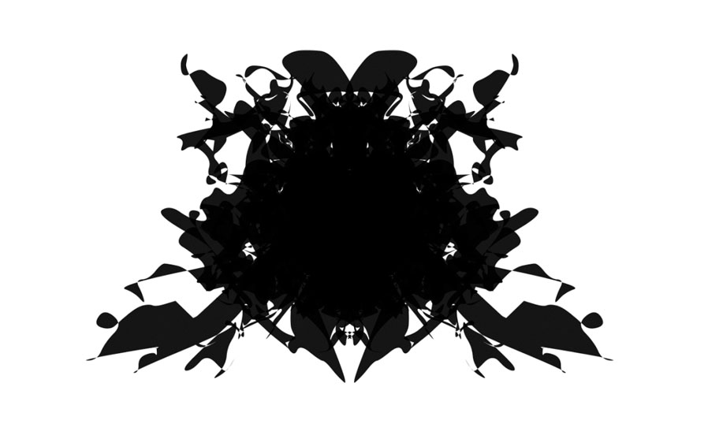
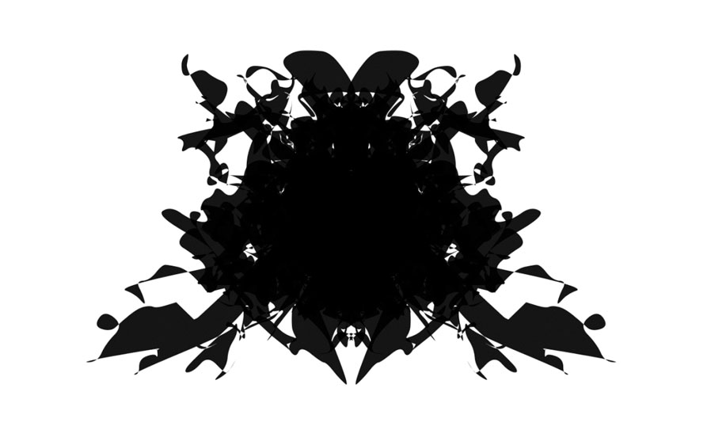
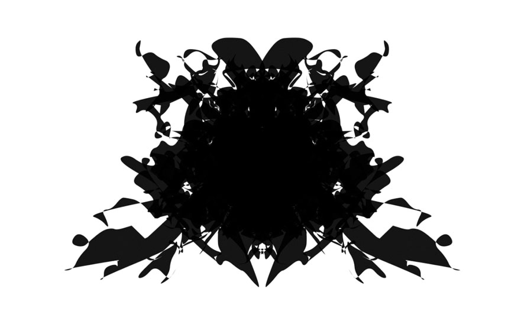

EEG1: From nonsensical wavy lines to differentiating wake from sleep
EEG may appear to the untrained eye as a bunch of noisy lines from which no information can be extracted.
A sort of Rorschach test with ambiguous inkblots where what is seen depends largely on what is already
in one's mind.

Rorschach tests present symmetrical inkblots. Their interpretation is largely subjective.
Fortunately, EEGs are not Rorschach tests and there is a lot of objective and useful information
to be extracted from EEGs. Interpreting EEGs is all about pattern recognition.
Many EEG newbies typically struggle to identify these patterns and do not even know where to start.
This post will try to provide new EEG readers with some help on the most basic pattern recognition in
EEG: identifying wakefulness and the different stages of sleep. This will be a good starting point to
EEG reading.
First, the pictures below illustrate typical EEG tracings during wakefulness and different sleep stages
emphasizing their most relevant features. Then, there is a quiz to test and solidify that knowledge.
Finally, there is a summary of the most relevant features in this post.
WAKEFULNESS
EEG during wakefulness. Representative sample of EEG during wakefulness.
Three main features that allow to identify wakefulness during an EEG are:
Eyeblinks. The retina is relatively negative compared to the cornea. When eyes close the
eyeballs roll up in the Bell's phenomenon and the relatively positive cornea gets closer to the
frontopolar (Fp1 and Fp2) electrodes. This positive polarity leads to a downward deflection on
EEG. This EEG has several eyeblinks, some of them are easy to identify (red arrows).
Can you recognize the rest of eyeblinks?
Muscle artifact. Muscle artifact is easy to identify as high-frequency
sharp deflections that make the channels appear "darker".
Posterior dominant rhythm. The posterior dominant rhythm is the idle
rhythm of the visual cortex. That is, it is a rhythm that appears when the visual cortex
is not active (typically, when eyes are closed and the patient is relaxed).
DROWSINESS (NREM1)
EEG during drowsiness. Representative sample of EEG during drowsiness
(also known as non-REM sleep 1).
Vertex waves are the defining features of drowsiness:
Vertex waves. Vertex waves are the midline findings with a
triangular shape. They are mostly centered at Cz and are typically symmetrical.
STAGE II SLEEP (NREM2)
EEG during stage II sleep. Representative sample of EEG during
stage II sleep (also known as non-REM sleep 2).
Spindles are the defining features of stage II sleep. Vertex waves still appear in
stage II sleep:
Spindles following vertex waves. Spindles are the bursts of
approximately 14 Hz highlighted by the red arrows. They are typically associated
with vertex waves and they are typically symmetrical.
STAGE III SLEEP (NREM3)
EEG during stage III sleep. Representative sample of EEG during
stage III sleep (also known as non-REM sleep 3).
Diffuse slow waves are the defining features of stage III sleep. Spindles still appear in
stage III sleep:
Diffuse slow waves. High-amplitude (high-voltage) slow waves
are diffuse and generally symmetric. The red arrows point to a couple of examples of
these slow waves.
Identifying these relatively straightforward features will help you recognize the most important
stages of wakefulness and sleep:

 
